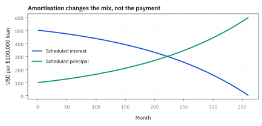
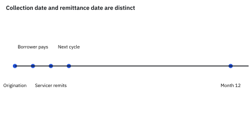
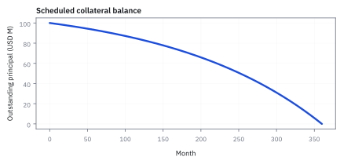
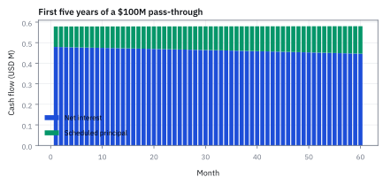

22.1 Mortgage Mathematics and Pass-Throughs
ค่างวดบ้านเท่ากันทุกเดือน แต่ข้างในคือดอกเบี้ยที่ลดลงกับเงินต้นที่โตขึ้น และ pass-through ก็แค่ส่งเงินชุดนี้ของบ้านหลายพันหลังต่อให้ผู้ลงทุนหลังหักค่าบริการ
ธนาคารปล่อยกู้ซื้อบ้าน \$100,000 ดอกเบี้ย 8.125% ต่อปี ผ่อนเท่ากันทุกเดือน 30 ปี (360 งวด) ค่างวดเดือนละ \$742.50 ผ่านไปสองปี ธนาคารจะขายสินเชื่อก้อนนี้เข้ากองสินเชื่อ (pool) ที่จะออกเป็นตราสาร จึงต้องบอกผู้ซื้อว่าหนี้เหลือเท่าไร เจ้าหน้าที่คนหนึ่งตอบว่า “ผ่อนไปแล้ว 24 จาก 360 งวด หนี้ก็ลดไป 24/360 เหลือราว \$93,333” ถูกไหม?
ลองตอบก่อนเปิดเฉลย
ผิดไปเกือบ \$5,000 หนี้ยังเหลือ \$98,301.53 ผู้กู้จ่ายไปแล้ว 24 งวด รวมราว \$17,820 แต่ตัดเงินต้นได้แค่ราว \$1,698 หรือ 1.7% ของยอดกู้ อีกราว \$16,121 เป็นดอกเบี้ย เพราะดอกเบี้ยของแต่ละเดือนคิดจากหนี้ที่ค้าง และช่วงแรกหนี้ยังค้างเกือบเต็มก้อน ขั้นที่ 5 คิดตัวเลขนี้ทีละบรรทัด
สิ่งที่เราจะสร้าง
18.1 รวมเงินงวดเท่ากันเป็นมูลค่าวันนี้ด้วยอนุกรมเรขาคณิต และ 18.2 ดูว่าราคาของเงินชุดหนึ่งขยับอย่างไรเมื่ออัตราเปลี่ยน หน้านี้ใช้สองเรื่องนั้นกับสินเชื่อบ้านแบบค่างวดคงที่ (level-payment mortgage) ซึ่งเป็นวัตถุดิบของทั้งบท
เราจะลองเงินกู้สามงวดด้วยมือ แล้วขยายเป็นสูตรค่างวด แยกงวดแรกเป็นดอกเบี้ยกับเงินต้น ดูว่าทำไมเงินต้นโตเดือนละ $(1+r)$ เท่า หายอดหนี้ของเดือนใดก็ได้โดยไม่ต้องไล่ทีละเดือน ถามว่าสินเชื่อนี้มีค่าเท่าไรเมื่ออัตราตลาดเปลี่ยน แล้วรวมสินเชื่อ \$400 ล้านเป็น pass-through และสรุป pool ด้วย WAC กับ WAM ตอนนี้ยังสมมติว่าไม่มีใครคืนหนี้ก่อนกำหนดและไม่มีใครผิดนัด สองเรื่องนั้นคือ 22.2 และ 22.5
ศัพท์ที่ใช้ในหัวข้อนี้
- Level-payment mortgage
- สินเชื่อบ้านที่จ่ายเท่ากันทุกเดือนจนหนี้หมดพอดีในงวดสุดท้าย (fully amortizing) ใช้เป็นแบบพื้นฐาน เพราะเงินทุกงวดคำนวณล่วงหน้าได้ทั้งหมดถ้าไม่มีใครคืนก่อน
- Principal และ interest
- Principal คือเงินต้นที่ยังค้าง interest คือดอกเบี้ยของเดือนนั้นซึ่งคิดจากเงินต้นที่ค้าง ค่างวดแต่ละงวดจ่ายดอกเบี้ยก่อน ส่วนที่เหลือไปตัดเงินต้น
- Amortization schedule
- ตารางที่แยกทุกงวดเป็นดอกเบี้ย เงินต้น และหนี้ปลายเดือน ใช้ตรวจว่าเงินที่รับกับยอดหนี้สอดคล้องกันทุกเดือน
- Mortgage-backed security (MBS) และ pass-through
- MBS คือตราสารที่มีกองสินเชื่อบ้านเป็นหลักประกัน pass-through คือแบบที่ง่ายที่สุด ส่งดอกเบี้ยและเงินต้นที่เก็บได้ให้ผู้ถือทุกคนตามสัดส่วน หลังหักค่าบริการ
- Servicing fee และ pass-through rate
- ค่าตอบแทนของผู้เก็บเงินจากผู้กู้ (servicer) คิดเป็นอัตราต่อปีบนหนี้ที่ค้าง อัตราที่ผู้ลงทุนได้จึงเท่ากับอัตราของผู้กู้ลบค่าบริการนี้
- WAC และ WAM
- Weighted-average coupon และ weighted-average maturity คืออัตราดอกเบี้ยและจำนวนเดือนที่เหลือของสินเชื่อทุกก้อนใน pool เฉลี่ยโดยใช้หนี้ค้างเป็นน้ำหนัก ใช้สรุป pool ด้วยตัวเลขสองตัว
- Agency MBS
- MBS ที่ออกโดย Ginnie Mae, Fannie Mae หรือ Freddie Mac ซึ่งรับประกันว่าผู้ลงทุนได้เงินต้นคืนแม้ผู้กู้ผิดนัด ผู้ถือจึงเหลือความเสี่ยงเรื่องอัตราดอกเบี้ยและจังหวะการคืนเงิน ไม่ใช่เรื่องการผิดนัด
สัญลักษณ์และหน่วย
| สัญลักษณ์ | ความหมาย | หน่วย |
|---|---|---|
| $B_0,\ B_t$ | ยอดกู้ตั้งต้น และหนี้ค้างหลังจ่ายงวดที่ $t$ | \$ |
| $c,\ r=c/12$ | อัตราดอกเบี้ยของสินเชื่อต่อปี และต่อเดือน | สัดส่วนต่อปี, ต่อเดือน |
| $N,\ t$ | จำนวนงวดทั้งหมด และงวดที่กำลังดู | เดือน |
| $A$ | ค่างวดคงที่ | \$ ต่อเดือน |
| $I_t,\ P_t$ | ดอกเบี้ย และเงินต้นที่ตัดในงวดที่ $t$ | \$ ต่อเดือน |
| $y$ | อัตราตลาดต่อปีที่ใช้คิดลด (ทบรายเดือน) | สัดส่วนต่อปี |
| $s,\ c-s$ | ค่าบริการต่อปี และอัตราที่ผู้ลงทุนได้ (pass-through rate) | สัดส่วนต่อปี |
| $C_t$ | เงินที่ pass-through ส่งให้ผู้ลงทุนในเดือน $t$ | \$ ต่อเดือน |
ขั้นที่ 1 — ลองด้วยมือ: เงินกู้ \$1,000 ผ่อนสามเดือน
ก่อนแตะ 360 งวด ลองเงินกู้ที่เล็กพอจะคิดบนกระดาษ กติกามีข้อเดียว: ทุกเดือนหนี้โตด้วยดอกเบี้ยก่อน แล้วค่างวดจึงหักออก และหนี้ต้องเป็นศูนย์พอดีหลังงวดสุดท้าย
โจทย์ให้อะไรมาบ้าง: $B_0=\$1{,}000$ ดอกเบี้ย 1% ต่อเดือน ($r=0.01$) ผ่อน 3 งวดเท่ากัน หาค่างวด $A$
| เดือน | ดอกเบี้ย (1% ของหนี้ต้นเดือน) | เงินต้นที่ตัด | หนี้ปลายเดือน |
|---|---|---|---|
| 1 | 10.00 | 330.02 | 669.98 |
| 2 | 6.70 | 333.32 | 336.66 |
| 3 | 3.37 | 336.66 | 0.00 |
คำตอบ: ค่างวด \$340.02 เดือนแรกดอกเบี้ยกิน \$10.00 เพราะหนี้ยังค้างเต็ม \$1,000 เดือนสุดท้ายเหลือแค่ \$3.37 เงินต้นที่ตัดจึงโตขึ้นทุกเดือนทั้งที่ค่างวดเท่าเดิม
ตรวจเองใน 10 วินาที: เงินต้นสามก้อน $330.02+333.32+336.66=1{,}000.00$ คือยอดกู้พอดี และดอกเบี้ยรวม $10.00+6.70+3.37=20.07$ เท่ากับ $3(340.0221)-1{,}000$
ขั้นที่ 2 — สูตรค่างวดของ $N$ งวด
ขั้นที่ 1 คลี่หนี้ออกทีละเดือนแล้วตั้งให้งวดสุดท้ายเป็นศูนย์ ขั้นนี้ทำแบบเดียวกันกับ $N$ งวด ผลรวมที่ได้เป็นอนุกรมเรขาคณิตแบบเดียวกับ annuity ใน 18.1
บรรทัดแรกคือกติกาของสัญญา ใช้ซ้ำ $t$ ครั้งจะได้บรรทัดที่สอง ค่างวดที่จ่ายเดือนแรกถูกทบดอกเบี้ยไป $t-1$ เดือน ส่วนงวดล่าสุดยังไม่ถูกทบเลย ผลรวมของตัวคูณเหล่านี้คืออนุกรมเรขาคณิต บรรทัดสุดท้ายตั้ง $B_N=0$ ย้าย $A$ ไปอีกข้าง แล้วหารทั้งตัวเศษและตัวหารด้วย $(1+r)^N$ จึงได้ค่างวด
อัตรา 8.125% เป็นอัตราต่อปีที่ธรรมเนียมสินเชื่อบ้านสหรัฐฯ แบ่งเป็นรายเดือนด้วยการหารด้วย 12 ตรง ๆ จึงใช้ $r=0.08125/12$ ไม่ใช่ $1.08125^{1/12}-1$
ขั้นที่ 3 — สินเชื่อ \$100,000: ค่างวด งวดแรก และงวดที่สอง
โจทย์ให้อะไรมาบ้าง: $B_0=\$100{,}000$ $c=8.125\%$ ต่อปี $N=360$ ดอกเบี้ยของแต่ละงวดคิดจากหนี้ต้นงวด ตามสัญญา $I_t=rB_{t-1}$ ส่วนที่เหลือของค่างวด $P_t=A-I_t$ ไปตัดเงินต้น
คำตอบ: ค่างวด \$742.50 (ปัดจาก 742.4972) เดือนแรกเป็นดอกเบี้ย \$677.08 หรือ 91.19% ของค่างวด ตัดเงินต้นได้ \$65.41 หนี้ปลายเดือนแรกเหลือ \$99,934.59 เดือนที่สองดอกเบี้ยลดลงเล็กน้อย เงินต้นที่ตัดจึงเพิ่มเป็น \$65.86
ตรวจเองใน 10 วินาที: $65.8568/65.4138=1.00677$ ซึ่งคือ $1+r$ พอดี ขั้นที่ 4 จะบอกว่าทำไม
ขั้นที่ 4 — ทำไมเงินต้นโตเดือนละ $(1+r)$ เท่า
ขั้นที่ 3 เห็นว่าเงินต้นงวดที่สองเท่ากับงวดแรกคูณ $1+r$ ขั้นนี้แสดงว่าเป็นแบบนี้ทุกงวด เพราะทุกดอลลาร์ที่ตัดเงินต้นไปเดือนก่อน ทำให้ดอกเบี้ยเดือนนี้ลดลง $r$ ดอลลาร์ แล้วเงินที่ประหยัดได้ก็ไปตัดเงินต้นต่อ
บรรทัดที่สองแทน $B_{t-1}=B_{t-2}-P_{t-1}$ จากกติกา บรรทัดที่สามเห็นว่าวงเล็บแรกคือ $P_{t-1}$ เอง เงินต้นจึงโตแบบทบต้นด้วยอัตราเดียวกับดอกเบี้ย เดือนที่ 24 จึงตัดเงินต้น $65.4138(1+r)^{23}=76.40$
งวดสุดท้ายต้องล้างหนี้ที่เหลือ $B_{359}$ พร้อมดอกเบี้ยของมัน จึงได้ $B_{359}(1+r)=A$ เงินต้นงวดสุดท้ายคือ \$737.50 และดอกเบี้ยเหลือแค่ \$4.99 ย้อนกลับมาจะได้ว่าเงินต้นงวดแรกคือค่างวดที่คิดลดไป 360 เดือน $742.4972/11.350765=65.4138$ เงินต้นก้อนแรกจึงเล็กมากเมื่อสัญญายาว
Figure 22.1a — ค่างวดเท่าเดิม แต่ส่วนผสมข้างในเปลี่ยนทุกเดือน

สินเชื่อ \$100,000 อัตรา 8.125% 360 งวด แกนนอนคือเดือนที่ 1 ถึง 360 แกนตั้งคือดอลลาร์ต่อเดือน เส้นดอกเบี้ย (Scheduled interest) เริ่มที่ \$677.08 แล้วลดลงจนเหลือ \$4.99 ในเดือนสุดท้าย เส้นเงินต้น (Scheduled principal) คือ $65.41(1+r)^{t-1}$ จากขั้นที่ 4 สองเส้นรวมกันเป็น \$742.50 ทุกเดือน และตัดกันราวเดือนที่ 258 ซึ่งเป็นปีที่ 21.5 ของสัญญา
ขั้นที่ 5 — หนี้ของเดือนใดก็ได้ และคำตอบของโจทย์
ถ้าอยากรู้หนี้หลังสองปี ไม่ต้องไล่ 24 แถว แทนค่างวดจากขั้นที่ 2 ลงในสูตรหนี้ของขั้นเดียวกัน ค่างวดจะหายไปจากสูตร เหลือแค่สัดส่วนของเวลา
เขียน $g_t$ แทน $(1+r)^t$ ให้สั้นลง บรรทัดที่สามได้จากแทน $A$ แล้วรวมเศษส่วน ตัวเลขของสองปีคือ $g_{360}-g_{24}=11.3507646-1.1758042=10.1749604$ หารด้วย $g_{360}-1=10.350765$ บรรทัดที่สี่บอกความหมายที่ใช้บ่อยที่สุดในบทนี้: หนี้ที่ค้างเท่ากับมูลค่าวันนี้ของค่างวดที่เหลือ $N-t$ งวด คิดลดด้วยอัตราของสินเชื่อเอง ผู้กู้ที่อยากปิดหนี้ก่อนกำหนดจึงจ่ายเท่านี้พอดี
ใน 24 งวดผู้กู้จ่ายไป \$17,819.93 ตัดเงินต้นได้ \$1,698.47 หรือ 1.7% ของยอดกู้ ที่เหลือราว \$16,121 เป็นดอกเบี้ย 90.5% ของเงินที่จ่าย การเดา 24/360 ของยอดกู้คือการคิดว่าเงินต้นตัดเท่ากันทุกเดือน ซึ่งผิดตามขั้นที่ 4
Figure 22.1b — ผ่อนสองปีแรกแทบทั้งหมดเป็นดอกเบี้ย

สินเชื่อเดียวกัน แกนนอนคือปีนับจากวันกู้ แกนตั้งคือเงินสะสมเป็นพันดอลลาร์ เส้นประเทาคือเงินที่จ่ายไปทั้งหมด $742.50\,t$ เส้นน้ำเงินคือดอกเบี้ยที่จ่ายแล้ว เส้นเขียวคือเงินต้นที่คืนแล้ว $B_0-B_t$ ป้ายที่ปีที่ 2 เขียน interest 16,121 และ principal 1,698 ตรงกับขั้นที่ 5 และป้ายที่สองบอกว่าเงินต้นคืนครบครึ่ง (\$50,000) ในเดือนที่ 270 หรือปีที่ 22.5 ตลอดสัญญาจ่ายดอกเบี้ยรวม $360(742.4972)-100{,}000=\$167{,}298.98$
ขั้นที่ 6 — สินเชื่อนี้มีค่าเท่าไรเมื่ออัตราตลาดเปลี่ยน
สำหรับผู้ซื้อ สินเชื่อคือเงิน \$742.50 ต่อเดือนอีก 360 เดือน มูลค่าวันนี้จึงได้จากการคิดลดด้วยอัตราตลาด $y$ แบบเดียวกับพันธบัตรใน 18.2 ขั้นนี้ถามว่ามูลค่านั้นขยับเท่าไร และทำไมผู้กู้ไม่ยอมให้มันขึ้นไปได้เต็มที่
เมื่อ $y=c$ ตัวคูณ 134.6806 คือส่วนกลับของ $r/(1-(1+r)^{-N})$ ในสูตรค่างวดของขั้นที่ 2 พอดี มูลค่าจึงเท่ากับยอดกู้ ถ้าอัตราตลาดลงเป็น 6% เงินชุดเดิมมีค่าขึ้น 23.8% ถ้าขึ้นเป็น 10% ค่าลง 15.4% ทิศเดียวกับพันธบัตรทุกตัวใน 18.2
แต่ผู้กู้บ้านในสหรัฐฯ มีสิทธิปิดหนี้เมื่อไรก็ได้ด้วยยอดหนี้ค้าง (\$100,000 ในวันแรก) ถ้าอัตราลงเป็น 6% เขาจะกู้ก้อนใหม่ที่ถูกกว่ามาปิดก้อนเดิม เจ้าของสินเชื่อจึงได้ \$100,000 คืน ไม่ใช่ของที่มีค่า \$123,842.30 สิทธินี้คือการคืนก่อนกำหนด (prepayment) ซึ่งเป็นเรื่องทั้งหมดของ 22.2
ขั้นที่ 7 — รวมสินเชื่อ \$400 ล้านเป็น pass-through
ถ้าธนาคารรวมสินเชื่อแบบเดียวกันหลายพันก้อนเป็น pool \$400 ล้าน แล้วออกตราสารที่ส่งเงินทุกดอลลาร์ที่เก็บได้ต่อให้ผู้ถือตามสัดส่วน ผู้ถือจะได้อะไรในแต่ละเดือน ขั้นนี้นิยามกติกาของ pass-through: servicer หักค่าบริการจากดอกเบี้ย ส่วนเงินต้นส่งต่อครบ ตัวอย่างใช้ pool ที่ทุกก้อนเหมือนกัน (8.125%, 360 งวด) จึงคิดเหมือนสินเชื่อก้อนเดียวที่ใหญ่ขึ้น 4,000 เท่า และค่าบริการ $s=0.625\%$ ต่อปี
บรรทัดแรกคือนิยาม ผู้ลงทุนได้ดอกเบี้ยที่อัตรา $c-s=7.50\%$ บนหนี้ต้นเดือน บวกเงินต้นทุกดอลลาร์ที่ผู้กู้คืน เดือนแรกเก็บจากผู้กู้ได้ \$2,969,988.72 เป็นดอกเบี้ย \$2,708,333.33 และเงินต้น \$261,655.39 ค่าบริการ \$208,333.33 ไปที่ servicer ที่เหลือ \$2,761,655.39 ส่งให้ผู้ลงทุน
ผู้ถือ 1% ของตราสาร (หน้าตั๋ว \$4 ล้าน) ได้ 1% ของทุกก้อน คือ \$27,616.55 ในเดือนแรก เพราะค่าบริการคิดจากหนี้ค้างซึ่งลดลงทุกเดือน เงินรวมที่ผู้ลงทุนได้จึงขยับขึ้นช้า ๆ เดือนที่ 60 เป็น \$2,771,498.50 ทั้งที่ผู้กู้จ่ายเท่าเดิม
Figure 22.1c — หนี้ของ pool ลดช้าในช่วงแรกและเร็วในช่วงท้าย

หนี้ค้างของ pool \$400 ล้าน อัตรา 8.125% 360 งวด เมื่อไม่มีใครคืนก่อนกำหนด แกนนอนคือเดือนที่ 0 ถึง 360 แกนตั้งคือล้านดอลลาร์ เส้นโค้งคว่ำเพราะเงินต้นที่ตัดโตทุกเดือนตามขั้นที่ 4 หลังห้าปีหนี้ยังเหลือ \$380.71 ล้าน หรือ 95.2% ของตอนเริ่ม
Figure 22.1d — เงินที่ผู้ถือ pass-through ได้ในห้าปีแรก

แท่งซ้อนของเดือนที่ 1 ถึง 60 หน่วยล้านดอลลาร์ ส่วนล่าง (Net interest 7.50%) คือ $\frac{0.08125-0.00625}{12}B_{t-1}$ ส่วนบนคือเงินต้นตามตาราง ค่าบริการไม่ได้อยู่ในแท่ง เดือนแรกแท่งสูง 2.50 + 0.26 = 2.76 ล้าน เดือนที่ 60 เป็น 2.38 + 0.39 = 2.77 ล้าน ส่วนดอกเบี้ยหดลงและส่วนเงินต้นโตขึ้นตามขั้นที่ 4
ขั้นที่ 8 — WAC และ WAM: สรุป pool ด้วยสองตัวเลข
pool จริงมีสินเชื่ออัตราและอายุต่างกัน เอกสารของตราสารจึงสรุปด้วยค่าเฉลี่ยที่ใช้หนี้ค้างเป็นน้ำหนัก ขั้นนี้นิยามสองค่านี้ ลองกับ pool สามก้อน แล้วถามว่าใช้สองตัวเลขนี้แทน pool ได้แค่ไหน
pool สมมติมีสามก้อน: \$200,000 อัตรา 7.5% เหลือ 300 เดือน, \$150,000 อัตรา 8% เหลือ 330 เดือน และ \$50,000 อัตรา 9.5% เหลือ 355 เดือน หนี้รวม \$400,000 น้ำหนักจึงเป็น 0.5, 0.375 และ 0.125
ค่างวดจริงของสามก้อนรวมกันคือ $1{,}477.98+1{,}125.64+421.48=\$3{,}025.10$ แต่ถ้าสร้างสินเชื่อก้อนเดียว \$400,000 ที่อัตรา WAC และ 318.125 เดือน จะได้ \$3,016.17 ขาดไป \$8.93 ต่อเดือน เพราะค่างวดไม่ได้เป็นเส้นตรงในอัตราและอายุ WAC กับ WAM จึงเป็นบทสรุป ไม่ใช่ตัวแทนที่แม่นของ pool
คำถามที่ควรถามออกมาดัง ๆ
ทำไมหารด้วย 12 ตรง ๆ ถ้าทบรายเดือนจริง ผู้กู้ก็จ่ายเกิน 8.125% ต่อปี? ใช่ ทบ 12 เดือนได้ $(1.006770833)^{12}-1=8.43\%$ ต่อปี ตัวเลข 8.125% เป็นอัตราที่ประกาศตามธรรมเนียม ไม่ใช่อัตราที่ทบแล้ว การคิดลดทั้งหมดในบทนี้จึงทำเป็นรายเดือนด้วย $r=c/12$ ให้ตรงกับเงินที่ไหลจริง
ถ้า agency รับประกันการผิดนัดแล้ว ผู้ถือ pass-through ยังเสี่ยงอะไร? เสี่ยงสองเรื่อง ขั้นที่ 6 แสดงว่ามูลค่าขึ้นลงตามอัตราตลาดเหมือนพันธบัตร และเงินต้นอาจคืนเร็วหรือช้ากว่าตารางเพราะผู้กู้ย้ายบ้านหรือกู้ใหม่ เรื่องหลังทำให้ pass-through ต่างจากพันธบัตรธรรมดา
pool ใหญ่ขึ้นแล้วเสี่ยงน้อยลงไหม? เสี่ยงน้อยลงเฉพาะส่วนที่เป็นเรื่องของผู้กู้รายคน เช่นบ้านหลังหนึ่งไฟไหม้ แต่ถ้าอัตราตลาดลงหรือราคาบ้านทั้งประเทศตก ผู้กู้ทุกคนได้รับผลพร้อมกัน การเฉลี่ยจึงไม่ช่วย 22.4 และ 22.5 ตามเรื่องนี้ด้วยตัวเลข
ความผิดที่ให้คำตอบผิดแบบเงียบ ๆ
คิดว่าเงินต้นตัดเท่ากันทุกเดือน: หนี้หลัง 24 งวดไม่ใช่ $100{,}000(1-24/360)=\$93{,}333$ แต่เป็น \$98,301.53 ต่างกันเกือบ \$5,000 ต่อสินเชื่อแค่ก้อนเดียว
คิดดอกเบี้ยจากยอดกู้เดิมทุกเดือน: แบบนี้ได้ดอกเบี้ย \$677.08 ทุกเดือน รวม 30 ปี \$243,750 ทั้งที่สัญญาคิดจากหนี้ค้างและรวมแค่ \$167,298.98
ใช้ค่างวดที่ปัดแล้วคิดต่อ: $742.50-677.08=65.42$ ไม่ใช่ 65.41 ที่ถูก และถ้าผ่อน \$742.50 ครบ 360 งวด หนี้ปลายสัญญาจะติดลบ \$4.31 เงินที่ผ่อนเกินเดือนละ 0.28 เซนต์ทบกัน 30 ปี ตารางของ servicer จึงต้องใช้ค่างวดเต็มแล้วปรับงวดสุดท้าย
ลืมหารค่าบริการด้วย 12: $400{,}000{,}000(0.00625)=\$2.5$ ล้าน เท่ากับดอกเบี้ยสุทธิทั้งเดือนของผู้ลงทุนพอดี ค่าที่ถูกคือ \$208,333.33
ใช้ทำอะไรบนโต๊ะจริง
ทุกเดือน servicer ต้องกระทบยอดให้ได้ว่า เงินที่เก็บจากผู้กู้เท่ากับเงินที่ส่งผู้ลงทุนบวกค่าบริการ (\$2,761,655.39 + \$208,333.33 = \$2,969,988.72) และหนี้ปลายเดือนเท่ากับหนี้ต้นเดือนลบเงินต้นที่คืน ผู้ลงทุนติดตาม pool ด้วยสัดส่วนหนี้ที่ยังค้าง (pool factor) เช่น $B_{24}/B_0=0.9830$ ถ้าไม่มีใครคืนก่อนกำหนด ตัวเลขที่รายงานจริงต่ำกว่านี้เสมอ และส่วนที่ต่างคือสิ่งที่ 22.2 วัด
สามโจทย์ตรวจความเข้าใจ
1. กู้ \$300,000 ดอกเบี้ย 6% ต่อปี ผ่อน 30 ปี ค่างวดเท่าไร และงวดแรกตัดเงินต้นเท่าไร?
เฉลย
$r=0.005$ และ $1.005^{360}=6.022575$ ค่างวด $300{,}000(0.005)/(1-1/6.022575)=\$1{,}798.65$ ดอกเบี้ยงวดแรก $0.005(300{,}000)=\$1{,}500$ ตัดเงินต้น \$298.65 หรือ 16.6% ของค่างวด ตรวจ: $1{,}798.65/6.022575=298.65$ ตามขั้นที่ 4
2. สินเชื่อข้อ 1 ผ่อนไป 5 ปี หนี้เหลือเท่าไร และจ่ายดอกเบี้ยไปเท่าไร?
เฉลย
$1.005^{60}=1.348850$ หนี้ $300{,}000(6.022575-1.348850)/(6.022575-1)=\$279{,}163.07$ จ่ายไป $60(1{,}798.6516)=\$107{,}919.09$ ตัดเงินต้น \$20,836.93 ดอกเบี้ยจึงเป็น \$87,082.16 หรือ 80.7% ของเงินที่จ่าย
3. pass-through \$100 ล้าน WAC 6.5% ค่าบริการ 0.5% ต่อปี เดือนแรกผู้ลงทุนได้ดอกเบี้ยเท่าไร และ servicer ได้เท่าไร?
เฉลย
อัตราที่ผู้ลงทุนได้ $6.5\%-0.5\%=6.0\%$ ดอกเบี้ย $100{,}000{,}000(0.06/12)=\$500{,}000$ ค่าบริการ $100{,}000{,}000(0.005/12)=\$41{,}666.67$ รวมกันเป็นดอกเบี้ยที่ผู้กู้จ่าย \$541,666.67 ถ้าลืมหารด้วย 12 ค่าบริการจะเป็น \$500,000 เท่ากับดอกเบี้ยทั้งหมดของผู้ลงทุน
คำนวณซ้ำด้วย JavaScript
โค้ดนี้คิดค่างวด เดินตารางทีละเดือน หาหนี้ด้วยสูตรปิด คิดมูลค่าสินเชื่อที่อัตราตลาดอื่น แยกเงินเดือนแรกของ pass-through \$400 ล้าน และคิด WAC กับ WAM แล้วพิมพ์ตัวเลขหลักของหน้านี้ออกมาหนึ่งบรรทัด
function num(name, x) {
if (typeof x !== 'number' || !Number.isFinite(x)) throw new TypeError(`${name} must be a finite number`);
return x;
}
function positive(name, x) {
if (!(num(name, x) > 0)) throw new RangeError(`${name} must be positive`);
return x;
}
function months(name, n) {
if (!Number.isInteger(n) || n < 1) throw new RangeError(`${name} must be a whole number of months, at least 1`);
return n;
}
// Level payment that takes B0 to zero after N months at annual rate c (monthly rate c/12).
// N may be fractional here (a pool's WAM); the month-by-month schedule needs whole months.
function levelPayment(B0, c, N) {
positive('B0', B0); positive('c', c); positive('N', N);
const r = c / 12;
return B0 * r / (1 - (1 + r) ** -N);
}
// Month-by-month schedule: interest on the opening balance, the rest of the payment is principal.
function schedule(B0, c, N) {
months('N', N);
const A = levelPayment(B0, c, N), r = c / 12, rows = [];
let B = B0, paidI = 0;
for (let t = 1; t <= N; t++) {
const I = r * B, P = A - I;
B -= P; paidI += I;
rows.push({t, I, P, B, paidI});
}
return {A, rows};
}
// Balance after t payments in closed form.
function balanceAfter(B0, c, N, t) {
months('N', N); levelPayment(B0, c, N);
if (!Number.isInteger(t) || t < 0 || t > N) throw new RangeError('t must be a whole month from 0 to N');
const g = (1 + c / 12) ** N;
return B0 * (g - (1 + c / 12) ** t) / (g - 1);
}
// Value today of n remaining payments A at market rate y (annual, compounded monthly).
function loanValue(A, y, n) {
positive('A', A); positive('y', y); months('n', n);
const m = y / 12;
return A * (1 - (1 + m) ** -n) / m;
}
// One month of a pass-through: the servicing fee s comes out of interest on the opening balance.
function passThroughMonth(B, c, s, A) {
positive('B', B); positive('c', c); positive('A', A);
if (!(num('s', s) >= 0 && s < c)) throw new RangeError('servicing fee must be at least 0 and below the mortgage rate');
const gross = c / 12 * B, fee = s / 12 * B, principal = A - gross;
return {collected: A, gross, fee, net: gross - fee, principal, investor: gross - fee + principal};
}
// Balance-weighted coupon and remaining term of a pool: loans = [[balance, rate, months], ...].
function wacWam(loans) {
if (!Array.isArray(loans) || loans.length === 0) throw new RangeError('loans must be a non-empty array');
let total = 0, wc = 0, wm = 0;
for (const [B, c, m] of loans) { positive('balance', B); positive('rate', c); months('months', m); total += B; wc += B * c; wm += B * m; }
return {total, wac: wc / total, wam: wm / total};
}
const loan = schedule(100000, 0.08125, 360);
const A = loan.A, row = t => loan.rows[t - 1];
const half = loan.rows.find(x => 100000 - x.B >= 50000).t;
const poolA = levelPayment(400e6, 0.08125, 360);
const pool = passThroughMonth(400e6, 0.08125, 0.00625, poolA);
const loans = [[200000, 0.075, 300], [150000, 0.08, 330], [50000, 0.095, 355]];
const w = wacWam(loans);
console.log(JSON.stringify({
toyA: levelPayment(1000, 0.12, 3), A, first: row(1), second: row(2),
P24: row(24).P, P360: row(360).P, B24: balanceAfter(100000, 0.08125, 360, 24),
paid24: 24 * A, interest24: row(24).paidI, halfMonth: half, totalInterest: 360 * A - 100000,
value: {at6: loanValue(A, 0.06, 360), at8125: loanValue(A, 0.08125, 360), at10: loanValue(A, 0.10, 360)},
pool, onePercent: 0.01 * pool.investor,
wac: w.wac, wam: w.wam,
sumPay: loans.reduce((s, [B, c, m]) => s + levelPayment(B, c, m), 0), wacPay: levelPayment(w.total, w.wac, w.wam)
}));ที่มาที่ไป
ก่อนทศวรรษ 1930 สินเชื่อบ้านในสหรัฐฯ มักมีอายุไม่กี่ปี จ่ายแค่ดอกเบี้ย แล้วต้องคืนเงินต้นก้อนใหญ่ตอนครบกำหนด (balloon) เมื่อธนาคารไม่ยอมต่อสัญญาในช่วง Great Depression คนจำนวนมากเสียบ้าน รัฐจึงตั้ง Federal Housing Administration ในปี 1934 ซึ่งทำให้สินเชื่ออายุยาวแบบผ่อนเท่ากันจนหมดหนี้กลายเป็นแบบมาตรฐาน ต่อมามี Fannie Mae (1938) Ginnie Mae (1968) และ Freddie Mac (1970) และ pass-through ตัวแรกออกในปี 1970
ถึงไตรมาสที่ 3 ปี 2012 ตราสารหนี้ของสหรัฐฯ มียอดคงค้างรวมราว \$35.3 ล้านล้าน เป็นหนี้ที่ผูกกับสินเชื่อบ้าน \$8.2 ล้านล้าน (23.3%) มากเป็นอันดับสามรองจากพันธบัตรรัฐบาล (\$10.7 ล้านล้าน) และหุ้นกู้เอกชน (\$8.6 ล้านล้าน) และมากกว่าพันธบัตรท้องถิ่น (\$3.7 ล้านล้าน) กว่าสองเท่า ตลาดนี้ใหญ่พอที่ความผิดพลาดในการคิดเงินของมันส่งผลต่อทั้งระบบ ซึ่ง 22.5 จะกลับมาดู
ข้อจำกัด: วิธีนี้สมมติอะไร และของจริงเป็นอย่างไร
| สมมติอะไร | ของจริง | ผลเวลาใช้งาน |
|---|---|---|
| ไม่มีใครคืนก่อนกำหนด | ผู้กู้ย้ายบ้าน กู้ใหม่ หรือโปะเพิ่ม | เงินต้นคืนเร็วกว่าตาราง ต้องใช้แบบจำลองของ 22.2 |
| ไม่มีใครผิดนัด | agency รับประกัน แต่ pool ของเอกชนไม่มี | ผู้ถือ pool เอกชนรับขาดทุนเอง ซึ่งเป็นเรื่องของ 22.3 ถึง 22.5 |
| ทุกก้อนเหมือนกัน | อัตราและอายุต่างกัน | WAC และ WAM เป็นแค่บทสรุป ค่างวดรวมต่างจากสินเชื่อตัวแทน |
| อัตราคงที่และจ่ายตรงวัน | มีสินเชื่ออัตราลอยตัว และผู้ลงทุนได้เงินช้ากว่าผู้กู้จ่ายหลายสิบวัน | ต้องเพิ่มกติกาการปรับอัตราและคิดลดตามวันที่เงินถึงมือจริง |
สิ่งที่ควรตอบได้หลังอ่าน
- ค่างวดคือค่าที่ทำให้หนี้เป็นศูนย์พอดีหลังงวดสุดท้าย: \$100,000 ที่ 8.125% 360 งวด ได้ \$742.50 ต่อเดือน
- ดอกเบี้ยคิดจากหนี้ค้าง เงินต้นที่ตัดจึงโตเดือนละ $(1+r)$ เท่า เริ่มจาก \$65.41 ซึ่งคือค่างวดที่คิดลดไป 360 เดือน
- หนี้ค้างเท่ากับมูลค่าวันนี้ของค่างวดที่เหลือ หลังสองปีจึงเหลือ \$98,301.53 ไม่ใช่ \$93,333
- สินเชื่อมีค่าขึ้นลงตามอัตราตลาด (\$123,842.30 ที่ 6%) แต่ผู้กู้ปิดหนี้ได้ที่ยอดค้าง ของที่ผู้ถือได้จริงจึงถูกจำกัดด้านบน
- pass-through ส่งดอกเบี้ยที่อัตรา $c-s$ บวกเงินต้นทั้งหมดให้ผู้ถือตามสัดส่วน และ WAC กับ WAM สรุป pool ได้ แต่แทน pool ไม่ได้พอดี
22.2 ปล่อยให้ผู้กู้คืนก่อนกำหนด แล้ววัดว่าเงินต้นมาเร็วแค่ไหนด้วยมาตรฐาน PSA และทำไมผู้ถือ MBS ได้ราคาที่ขึ้นยากแต่ลงง่าย